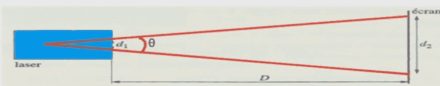
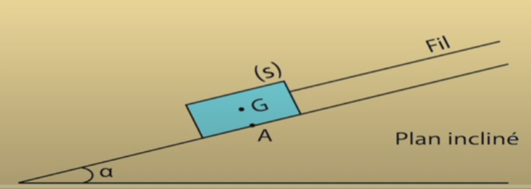
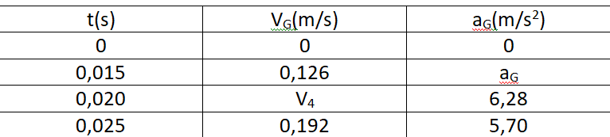

Chimie:
**Enoncé 1:
Une cartouche de gaz contient V=700ml de butane C4H10 à l'état liquide.
Dans cet état sa masse volumique est ρ=0,6g/ml.
Lorsque l'on ouvre la cartouche le butane change d'état physique et on le récupère à l'état gazeux.
1/ Calculer la masse de butane liquide dans la cartouche.
2/ Quelle est la quantité de matière de butane dans la cartouche?
3/ Quel volume total de gaz peut-on espérer recueillir?
Données: M(C)=12g/mol; M(H)=1g/ml; M(O)=16g/ml
NA=6,02.1023 mol-1 ;Volume molaire V=24l/mol.
Solution 1:*Notion de mole..
**Enoncé 2:
Par définition,un vinaigre de 6° contient 6g d'acide acétique C2H4O2
dans 100g de vinaigre.
1/ Calculer la quantité d'acide acétique n contenu dans 100g de vinaigre à 6°.
2/ Calculer le volume V d'acide acétique contenu dans 100g de ce vinaigre.
Données: Masse volumique de l'acide acétique:
ρ=1,05g/L ; M(C)=12g/mol ; M(H)=1g/mol ; M(O)=16g/mol.
(Solution 2):*Masse molaire et Mole .
**Enoncé 3:
Le chloroforme est une substance anésthésiante dans les opérations chirurgicales.
La molécule du chloroforme est constituée,uniquement du carbone,du chlore et d'hydrogène.
Ses pourcentages atomiques en chlore et en carbone sont 60% et 20%.
On considère que la formule brute de cette molécule est de forme CxHyClz.
Avec x,y et z des nombres entiers.
1/ Trouver la relation entre x,y et z .Peut-on déduire ses valeurs?.
2/ La molécule de chloroforme ne contient qu'un seul atome de carbone .Déterminer les valeurs de x,y et z.
3/ Proposer une représentation de Lewis pour la molécule de chloroforme.
4/ Proposer une structure géométrique de la molécule.
(Solution 3):*La géométrie de la molécule chloroforme. .
**Enoncé 4:
Déterminer la composition(nombre de protons,de neutrons et des électrons) des atomes suivants:
Nombre de masse: (58)Ni (9)Be (20)Ne (208)Pb (22)Ne (60)Ni (31)P (75)As (62)Ni
Données: Z(Be)=4 Z(Ne)=10 Z(P)=15 Z(Ni)=28 Z(As)=33 Z(Pb)=82
(Solution 4:)*Composition d' atome...
**Enoncé 5:
On considère le noyau de l’atome : ZAX
Avec A=2.Z +3
1/Sachant que le nombre de neutrons dans le noyau est N=20 Trouver la valeur des nombres Z et A.
2/ En se basant sur le tableau périodique donner le nom de l’élément chimique et sa représentation symbolique.
3/ Ecrire la structure électronique de cet atome.
4/ Définir la couche externe. Est-ce que cette couche est saturée ou non? Combien y a-t-il d'électrons de valence?
(Solution 5:)*Représentation symbolique d'un atome...
Mécanique:

**Enoncé 1:
Quand on suspend une masse de 0,2kg à l'extrémité d'un ressort de raideur K=100N/m.
Sa longueur finale est 12cm ,quand on suspend une masse de 0,7kg, sa longueur finale est 17cm.
1- Donner le bilan des forces exercées sur la masse.
2- Déterminer la longueur initiale du ressort.
(Solution 1):*Comment on calcule la longueur initiale d'un ressort?..
**Enoncé 2:
Quelle est la force d'attraction exercée par la terre sur un satellite artificiel de masse m=600kg,qui tourne autour de la terre
à une altitude h=36000km de sa surface?
Données:
*Masse de la terre:M=6.1024kg.
*Rayon de la terre:R=6400km
*Constante d'attraction universelle: G=6,67.10-11(SI).
(Solution 2):*Force de la terre sur un satellite..

**Enoncé 3:
Une barre(OA)homogène de masse m=1kg et de longueur L pouvant tourber sans frttement autour d'un axe horizontal
passant par son extrémité O,est enéquilibre comme l'indique la figure ci-dessous.
Le fil est fixé au centre G de la barre,passe sur la gorge d'une poulie et est fixé par l'autre extrémité à un ressort
verticale de raideur K ,à l'équilibre,le fil est normal à la barre,est α=30°.
1/ Faire l'inventaire des forces appliquées sur la barre(OA) et les representer sans souci d'échelle.
2/ Ecrire l'énoncé du théorème des moments.
3/ Par application de ce théorème,trouver l'intensité de la tensiondu fil.
4/ Déduire la valeur de la raideur du ressort sachant que son allongement est ∆l=5cm. g=10N/kg.
(Solution 3):*Théorème de moments des forces....
1èreBAC
CHIMIE:
**Enoncé 1:
On mélange dans un ballon 1,0 mol d'éthanoate de méthyle pur avec 1,0 mol d'eau distillée,
on ajoute quelques gouttes d'acide sulfurique concentré
et on chauffe à reflux le mélange réactionnel pendant un certain temps.
Une réaction chimique se produit.
A l'équilibre ,il reste 0,67 mol d'éthanoate de méthyle.
1/ Quel est le rôle de l'acide sulfurique ajouté?
2/ Citer deux caractéristiques de cette réaction.
3/ Ecrire l'équation de la réaction chimique étudiée en utilisant les formules semi-développées.
4/ Calculer la constante d'équilibre K associée à l'équilibre de cette réaction chimique.
(Solution 1):*Réaction d'hydrolyse(éthanoate de methyl.)..
**Enoncé 2:
Un iceberg a un volume total V = 5000 m3 .
La masse volumique de la glace vaut 900kg/m3.
1/ Calculer la quantité de matière d'eau dans cet iceberg.
2/ En déduire le nombre de molécules d'eau dans cet iceberg.
On donne: M(H) =1 g/mol M(O)=16g/mol. NA= 6,02 .1023 mol-1.
(Solution 2:)*Calcul le nombre de molécules d'eau dans un Iceberg. Quantité de matière.....
**Enoncé 3:
Ecriture des demi-équations:
Exemple des couples:
1/ NO3/NO
2/ CH3COOH/C2H5OH
(Solution 3:)*Demi-equation redox....
Mécanique:

**Enoncé 1:
Un solide(S) de masse m=0,2 kg est maintenu en équilibre sur un plan incliné parfaitement lisse d'inclinaison α=30° par rapport à l'horizontale par l'intermédiaire d'un ressort de constante de raideur K=40N/m.
L'axe du ressort fait un angle ß=20° avec le plan incliné.
1/ Faire l'inventaire des forces appliquées au solide (S) et les représenter sur le schéma.
2/ Exprimer l'allongement ∆L du ressort ,en fonction de m,g,α,Ketß.
3/ Exprimer R l'intensité de la réaction du plan en fonction de m,g,α,K, ∆L et ß.
4/ Calculer la valeur de ∆L puis la valeur de R.
Donnée: g= 10N/kg.

**Enoncé 2:
A/ Un électrolyseur est traversé par une quantité d'électricité de charge 72000 C pendant 2h.
Quelle est l'intensité du courant dans les conducteurs du circuit?
B/ On recharge durant 12 h une batterie d'accumulateurs avec un courant constant d'intensité 5A.
Quelle quantité d'électricité correspond à cette charge?
C/ Sur une batterie de téléphone portable,il est indiqué 1,3Ah.
Le télephone consomme en moyenne 0,08A. Calculer la durée au bout de laquelle la batterie est complètement déchargée?
D/ Dans un noeud de 5 conducteurs on mesure la valeur de l'intensité de 4 conducteurs suivant le dessin suivant:
Calculer la valeur Ie du cinquième conducteur et son sens?
(Solution 2:)*Détermination de la quantité d'électricité et la durée de passage de courant......
2èmeBAC
CHIMIE:
**Enoncé 1:
On considère les espèces chimiques suivantes:
C6H5CO2H , HCOO- ,HO- , NH4+ ,HF , HCOOH , F- ,NH3 , C6H5CO2-, H2O:
1/ Former les couples acide/base.
2/ Ecrire les équations des réactions acido-basiques avec l'eau des ces espèces chimiques.
(Solution 1):*Acide et base selon Bronsted..
**Enoncé 2:
Ecrire les demi-équations des couples suivants:
1/ Cr2O72- / Cr3+.
2/ MnO4- / Mn2+.
(Solution 2):* Les demi-équations du couple oxydoréduction..
**Enoncé 3:
On considère l'oxydation lente de l'acide oxalique par les ions permanganate.
A l'instant t=0 on mélange un volume de Vo= 25mL de la solution permanganate de potassium,
de concentration Co=0,01mol/L et un volume de Vr=20mL de l'acide oxalique de concentration Cr=0,1 mol/L.
On ajoute un volume de 5 mL d'acide sulfurique pour acidifier la solution.
L'ion permanganate(MnO4-)
et l'acide oxalique (H2C2O4),appartiennent aux couples redox suivants:
MnO4-/Mn2+ CO2/H2C2O4
1/ Ecrire les demi-équations électroniques relatives aux couples et établir l'équation de la réaction.
2/ Déterminer les quantités de matière des réactifs mis en présence.
3/ Dresser le tableau descriptif,déduire deux réactifs mis en présence,
quel est celui qui constitue le facteur limitant?
4/ Quelle est la concentration des ions manganèse en fin de réaction?
5/ L'ion (MnO4-)en solution est de couleur violette.
L'acide oxalique et l'ion manganèse en solution sont incolores,comment peut-on mettre en évidence l'évolution de la réaction.
(Solution 3):* Comment on différencier entre la Réaction lente et la Réaction rapide ?
PHYSIQUE:

**Enoncé 1:
Un pointeur laser utilisé par un conférencier,émet un faisceau lumineux de fréquence V=422THz et de puissance P=2mW
par une ouverture circulaire de diamètre d1=2mm,ilproduit une tache lumineuse de diamètre d2=10mm sur un écran situé à une distance D=10m de l'ouverture.
Donnée: C=3.108m/s.
1/ Calculer la longueur d'onde de la lumière émise par le laser dans l'air.
Quelle est la couleur du faisceau?
2/ Calculer la valeur de l'angle Ɵ appelé divergence du faisceau.
3/
a- Quelle est l'aire A de la tache lumineuse obtenue sur l'écran?
b- On admet que toute la puissance émise est transportée jusqu'à l'écran.
Calculer la puissance lumineuse par unité de surface reçue par l'écran.
c- Le faisceau est dangereux pour l'oeil humain si la puissance reçue par unité de surface est supérieure = 20W/m2..Conclure.
(Solution 1):*Propagation lumineuse-- Danger du rayon laser..

**Enoncé 2:
Un solide (S) de masse m= 1kg est posé sur un plan incliné d’angle α=30° par rapport à l’horizontale.
On applique sur(S) à l’aide d’un fil inextensible et de masse négligeable, une force \(\vec{T}\) constante de direction parallèle à la ligne de plus grande pente du plan incliné.
Le solide glisse alors sur le plan incliné sans vitesse initiale.
La valeur de l’accélération de centre d’inertie G de (S) est : a0=1m/s2.
Les deux composantes \(\vec{RT}\) et \(\vec{RN}\) de la force \(\vec{R}\) exercée par le plan incliné sur (S) sont la relation suivante : RT= RN/4 g= 10 m/s2
1-Calculer l’intensité de \(\vec{RN}\) , en déduire l’intensité de \(\vec{R}\) .
2- Déterminer l’expression de l’intensité de la tension \(\vec{T}\) du fil en fonction de m , g , a0 , α et RT. Calculer sa valeur.
3- Calculer l’angle de frottement φ.
4- Ecrire l’équation horaire du mouvement de G,en prenant comme origine des dates le point o, origine du repère d’espace R(o, \(\vec{i}\) , \(\vec{j}\) ).
(Solution 2):*Application de la 2ème loi de Newton (Mécanique)..
**Enoncé 3:
Afin de déterminer quelques caractéristiques du mouvement de chute d’une bille dans un liquide visqueux,
On réalise l’expérience suivante :
On remplie une éprouvette graduée par un liquide visqueux et transparent, puis on libère une bille sans vitesse initiale de masse 20g, est soumise à une force de frottement f = k VG.
En appliquant la 2ème loi de Newton, montrer que l’équation différentielle vérifiée par la vitesse s’écrit sous la forme :
dVG/dt+1/(σ ) VG=A
Déterminer graphiquement la valeur de la vitesse limite Vlim et la valeur de σ.
Trouver la valeur de k.
L’équation différentielle s’écrit :
dVG/dt = 9,26 – 18,52 VG
En utilisant la méthode d’Euler et les données du tableau déterminer a3 et V4.
<
(Solution 3):*La Chute Verticale d'un solide dans un liquide avec frottement....
**Enoncé 4:
Les équations horaires du mouvement du centre d'inertie d'un mobile G dans le repère(0,\(\vec{i}\),\(\vec{j}\),\(\vec{k}\))
x(t)=-2t+1
y(t)= 3t2+3 x,y,z en(m) t(s)
z(t)=0
1/ Exprimer le vecteur position \(\vec{OG}\) dans le repère (0,\(\vec{i}\),\(\vec{j}\),\(\vec{k}\)).
2/ Déterminer à l'instant t l'éxpression des coordonnées du vecteur\(\vec{V}\) et calculer sa valeur à l'instant t=2s.
3/ Déterminer les coordonnées du vecteur accélération et calculer sa valeur.
(Solution 4):*Équations horaires du mouvement d'un mobile......
Contact